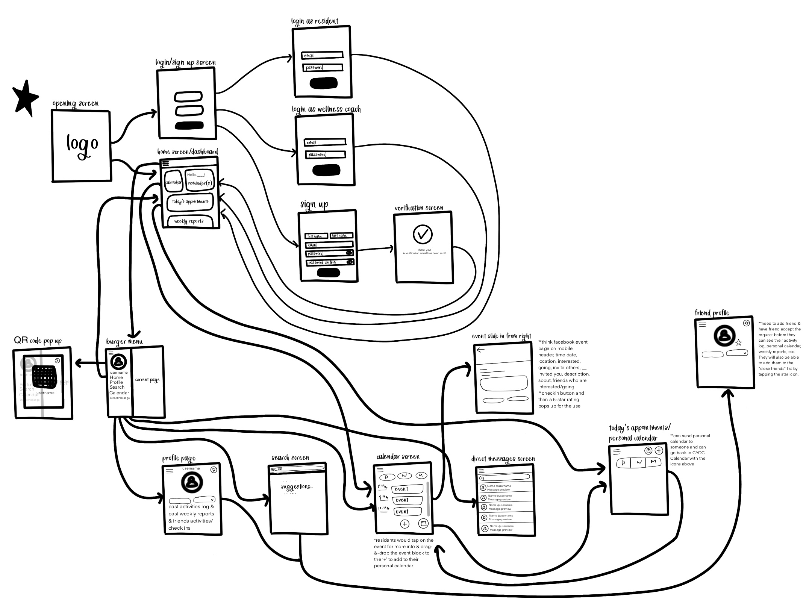
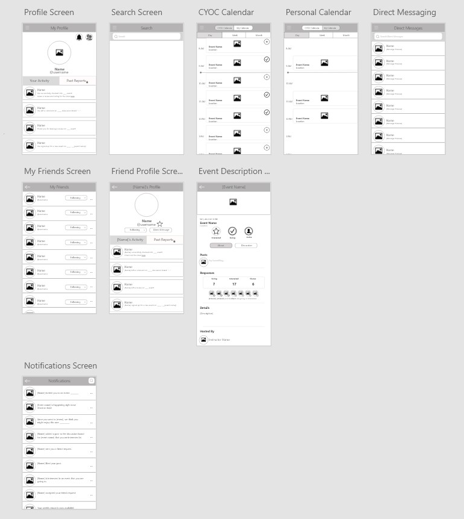
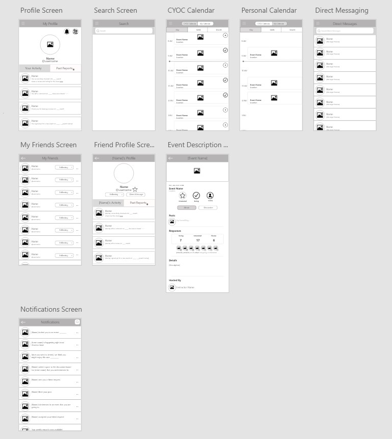
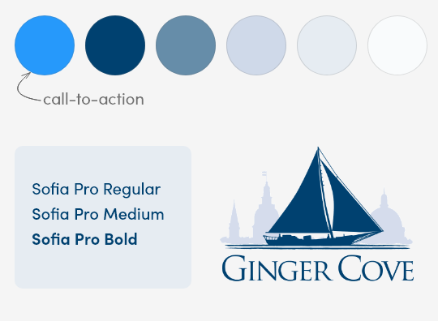

The Problems
The team is here to help build memory care.
- Go paperless; lack of organization and tracking on residents’ activities, which made it hard to see the results of their work.
- Introduce a new system to ease sign-ups and check-ins.
- Allow residents to express their feelings and concern whenever through the app.
- Ease of finding new activities at their fingertips without having to go to find the flyer for it.
- Build a stronger community through virtual interactions on the app.
Project's Goals
For Residents
- View Ginger Cove Announcements via the app and push-notifications
- Personal Reminders
- View Calendar of Events
- Sign Up for Events/Activities
- Add Friends (can see which friends are interested or going to an event)
- Share public activity with your friends to your feed
- Profile (QR Code, Personal Goals, Steps of the Day, Diary, “How are you feeling today”)
For Wellness Coach or Director
- View logs of events/activities for residents that signed up for the class and those that checked-in
- Read ratings and reviews left my residents
- View Weekly Wellness Reports of the residents
Research
From Team Lead's Research
- Many residents used an iPad or Apple iPhone (over an Android)
- Her decision: iOS Mobile App Development
From Personal Research
Compiled tables to report to the team at weekly meetings
- Conducted a Technologies Review on softwares and tools to use for the development of the app
- Team came to agreement that XCode was ideal for iOS App Development
- Team came to agreement that Adobe XD was what we would use for collaborating on the UI/UX design of the app.
- Researched the Design Feasibility of certain features
- I was assigned to research the diary feature and photo feed.
- Diary feature was approved while photo feature was decided to be a non-priority given our three month time frame.
- Researched UI/UX trends and color psychology for the branding to start building our high-fidelity mockup
- Decided to use one font for simplicity and to differentiate the same font with such parameters as size, weight and color depending on information hierarchy and organization.
- Blue - most likeable color, soothing, relaxing, and the most dominant color of Ginger Cove
- White - color of empty space & harmony; good for separating large chunks of info
- Determined other UI elements like rounded corners of 10 for buttons, and a bright blue color for call-to-action buttons
User Flow - My Proposal to the Team
Map
Wireframe
 

Branding
Solutions
1. The experience the user has when logging in
Designed by Katherine Vo
We created two separate log in portals for residents and wellness coaches.
2. The experience the user has when signing up
Designed by Katherine Vo
3. The experience the user has when looking for an event
Designed by Manar Al-badarneh & Katherine Vo
4. The experience the user has when looking at their personal calendar of events they signed up for
Designed by Ani Tansinda & Katherine Vo
Challenges & Takeaways
- Working Remotely: While building the design of this app, it was challenging to know everyone's style since we have never met each other before. We were all undergraduate students hoping to build our skills during the summer of quarantine. Additionally, we were given creative freedom to do design it any way we liked as long as it had the features that the CEO and Wellness Instructor specifically wanted. This means we had to set clear deadlines for ourselves for three months, often meeting once to twice a week to present our progress to the Team Lead and determine the next set of deliverables. With everyone's varying summer schedules because of other work or summer courses, we didn't wait for one another; I took initiative to take on more tasks and inform the team of improvements and resources for suggestions.
- Understanding the User: As a critical part of creating a user-centered design, it was difficult to get feedback from the residents of Ginger Cove. Communication to the residents were never direct: Our team lead would communicate to the Wellness Coach, who would then communicate to the residents. Through the Wellness Coach, we had a survey sent out asking of which wireframes they enjoyed the most, and included an area to leave feedback. However, only 5 residents responded. This made it challenging to design for everyone.
- Designing the high-fidelity prototype: Although I had a basic understanding of how the app was supposed to look through the finalized user flow diagram and wireframe, it was more difficult to actually implement our ideas than expected. Getting the team to fully understand the branding and smallest details of the UI was challenging because of our remote environment. Secondly, this was everyone's first time using Adobe XD. I had to watch videos and read articles on how to design certain aspects. I did my best to teach the rest of the team how to use features in Adobe XD that would make our work look more unified and simple for our users.
- My first ever UI/UX Project: This app was my first time working on a UI/UX design team. I got to dabble in learning about what the basic design process is, illustrating my first user flow diagram, making my first wireframe, and building my first working prototype! It was so exciting to see screens flow together based on the vision I had in mind. I have never touched Adobe XD before this experience, but I loved being able to play around with transitions and movements between screens based on certain actions by the user. I learned that a lot goes into good design, which is often something I take for granted. This experience has opened my eyes that there are so many details that go into making the user experience pleasurable, and that even the smallest details make the biggest differences.